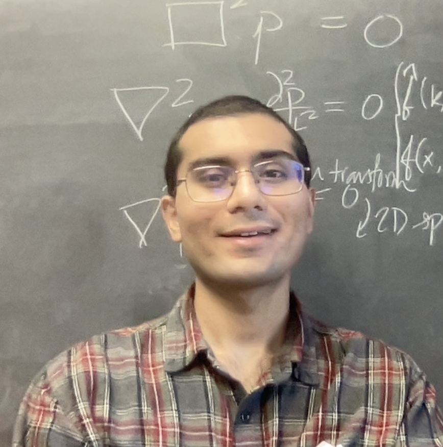

Haberman Research Group
People

Dr. Michael R. Haberman, Principal Investigator
Dr. Haberman is an Assistant Professor in the Walker Department of Mechanical Engineering at the University of Texas (UT) at Austin with a joint appointment at the Applied Research Laboratories UT Austin. He received his Ph.D. and Master of Science degrees in Mechanical Engineering from the Georgia Institute of Technology in 2007 and 2001, respectively, and received a Diplôme de Doctorat in Engineering Mechanics from the Université de Lorraine in Metz, France in 2006. His undergraduate work in Mechanical Engineering was done at the University of Idaho, where he received a B.S. in 2000. Dr. Haberman's research interests are centered on elastic and acoustic wave propagation in complex media, acoustic metamaterials, new acoustic transduction materials, ultrasonic nondestructive testing, and vibro-acoustic transducers. He has worked extensively on the modeling and characterization of composite materials and the multi-objective design of acoustical materials. His current research focuses on modeling, design, and testing of composite materials, metamaterials, and structures. His research finds application in technical areas that include the absorption and isolation of acoustical, vibrational, and impulsive energy using negative stiffness, acoustic cloaking, and devices that make use of non-reciprocal acoustic and elastic wave phenomena. His work has been featured in Physics Today, Scientific American, NBC News, and National Public Radio.
Senior member collaborators

Dr. Samuel Wallen, Research Associate
Sam's bio . Email: sam.wallen@utexas.edu
Dr. Iyabo Iwal, postdoc
Iyabo is an NSF/ASEE Post-Doctoral fellow with interests in using acoustics to provide better wear/fatigue diagnosis in tribology experiments. Iyabo completed her PhD in Mechanical Engineering from Rice University, where she studied how heuristic models such as the Bouc-Wen model, can be used to model contact using finite element methods (FEM). The FEM framework developed during her PhD work models non-linear effects of contact interfaces that include plasticity and friction. In her free time, she enjoys creating content for podcasts as well as playing music.
Email: iyabo@utexas.edu
Graduate students
Samuel (Sam) Parker, PhD candidate
Sam is a doctoral student at The University of Texas in Austin in the Haberman Research Group. He received a B.S. in Mechanical Engineering from North Carolina State University (2018) and a M.S. from UT Austin (2020). His M.S. research focused on the manipulation of sound via acoustic metasurfaces, with particular interests in acoustic holography and system design and optimization. He currently studies ultrasound in time-varying elastic media for applications in nondestructive evaluation. Email: sdparker@utexas.edu

Janghoon Kang, PhD candidate
In 2018, Janghoon Kang started his Ph.D. program and joined Haberman's research group. He received B.S. and M.S. in mechanical engineering from Korea Advanced Institute in Science and Technology and worked as an acoustic engineer in Samsung Electronics for 11 years. His research is mainly about the spatiotemporal modulation of the metasurface for the sound diffusion improvement.
Email: jh3010.kang@utexas.edu

A.J. Lawrence, PhD candidate
AJ joined the Haberman Research Group in 2017 after working at Bose Corporation for three years. He graduated from Rensselaer Polytechnic Institute in 2014 with a B.S. in Electrical Engineering. He is studying Willis coupling and the link to asymmetric absorption with asymmetric spherical scattering, and works at the Applied Research Laboratory at UT.
Email: ajlawrence@utexas.edu
Matthew Casali, Master's student
Matthew joined Dr. Haberman's Research Group in 2021 after graduating from the University of California, Santa Cruz with a B.S. in Applied Physics. Currently, he is investigating the electromomentum coupling effect in piezoelectric metamaterials.
Email: casali.ma98@gmail.com

Akash Nivarthi, Master's student
Akash continued at The University of Texas at Austin after graduating with a B.S. in Mechanical Engineering. Advised by Dr. Haberman and Dr. Christina Naify, his research uses ultrasonics to characterize additively manufactured materials.
Email: asnivarthi723@utexas.edu

Chirag Gokani, PhD student
Chirag joined the Haberman Research Group in 2021 after graduating from the University of Texas at Dallas with a B.S. in Physics. He studies Willis coupling and acoustic radiation force, and is co-advised by Dr. Mark Hamilton.
Email: chiragokani@gmail.com
Undergraduate students

..., undergraduate student
...
Email: ...
Alumni
Postdocs
- Benjamin M. Goldsberry
- Post-appointment: Applied Research Laboratories, UT Austin
- Samuel P. Wallen
- Post-appointment: Applied Research Laboratories, UT Austin
- Benjamin C. Treweek
- Post-appointment: Sandia National Laboratories
- Kyle S. Spratt
- Post-appointment: Applied Research Laboratories, UT Austin
Ph.D. students
- Tyler J. Wiest
- Post-graduation: Independent consultant
- Matthew Byrne
- Post-graduation: NSWC Carderock
- Colby W. Cushing
- Post-graduation: Applied Research Laboratories, UT Austin
- Curtis P. Rasmussen
- Post-graduation: University of Colorado, Boulder
- Benjamin M. Goldsberry
- Post-graduation: Applied Research Laboratories, UT Austin
- Stephanie G. Konarski
- Post-graduation: Naval Research Laboratories
- Caleb F. Sieck
- Post-graduation: Naval Research Laboratories
- Michael Muhlestein
- Post-graduation: US Army Corps of Engineers Cold Regions Research and Engineering Laboratory
- Matthew D. Guild
- Post-graduation: Naval Research Laboratories
M.S. students
- Barrett J. Neath
- Post-graduation: Charles River Associates
- Craig W. Broadman
- Post-graduation: Lawrence Livermore National Laboratory
- Melanie Schneider
- Post-graduation: Los Alamos National Laboratories
- Hughie A. Quan
- Post-graduation: Sandia National Laboratories
- Eli Willard
- Post-graduation: Applied Research Laboratories, UT Austin
- Fiona Cheung
- Post-graduation: BAi, LLC
- Ashley Hicks
- Post-graduation: University of Central Arkansas
- Ken Bostwick
- Post-graduation: U.S. Navy Officer Training Program
- Nicholas J. Joseph
- Timothy D. Klatt
- Post-graduation: Independent contractor
- Jordan Matthews
- Post-graduation: Independent design consultant
- Ben Fulcher
- Post-graduation: Harvest Technologies
- Steven Embleton
- Post-graduation: Applied Research Laboratories, UT Austin
- Kenneth Nguyen
- Post-graduation: Royal Dutch Shell
- Craig N. Dolder
- Post-graduation: Institute of Sound and Vibration (UK)
- Lia B. Kashdan
- Post-graduation: Sandia National Laboratories